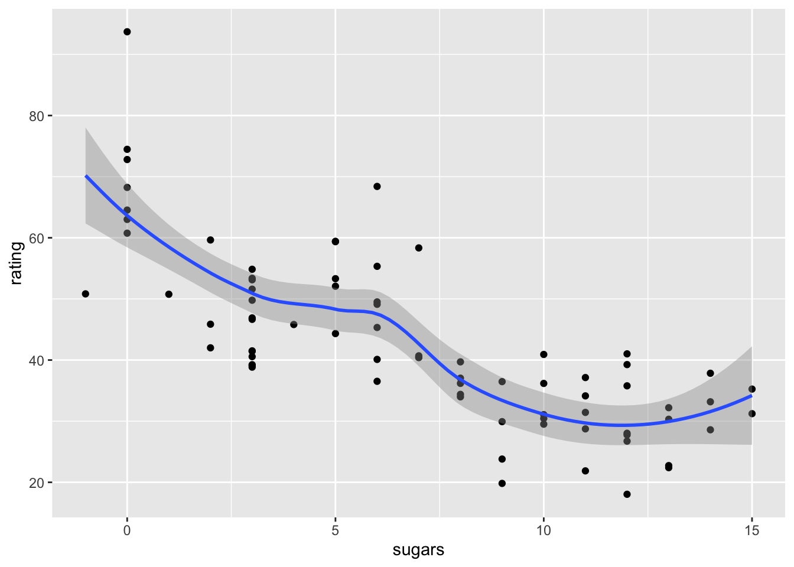

Additional Exercises
Session 1 -
Extra exercises inspired by “Getting started” & “Introduction to R programming”.
Challenge.
Recall that we suggested that you create a “standard” directory structure. Write a code snippet or script to create your preferred structure as a utility to be run when you create a new Rstudio project.
Consider how you could test if one or more of the directories already exists in your current working directory.
Hint: You may find it useful to checkout Rs help on ‘files2’ and ‘getwd’.Answer
curr_dir <- getwd() print(curr_dir) if (!dir.exists("data")) dir.create("data") # Another (and more flexible ) way could use the 'lapply' function (see R help) like this: tst_apply <- c("d1","d2","d3") # a vector of sub-dirs to create lapply(tst_apply, dir.create)#> Warning in FUN(X[[i]], ...): 'd1' already exists#> Warning in FUN(X[[i]], ...): 'd2' already exists#> Warning in FUN(X[[i]], ...): 'd3' already exists
Challenge.
Using two of the functions we introduced in this session, find out how
many missing variables are missing in the cereals dataset.
NB You will need to execute “install.packages(”plspm”)” first to install
package and its dataset.
# Install dataset
library(plspm)#>
#> Attaching package: 'plspm'#> The following object is masked from 'package:ggplot2':
#>
#> alphadata("cereals")
# read in surveys as dataframe (assumes portal data in data dir)
surveys <- read.csv("data/portal_data_joined.csv")Answer
# we can add up the number of TRUEs using the sum() function sum(is.na(cereals)) # if this is zero then there are no missing values.
Work through the surveys data-set and find which columns have missing
values and how many.
For an extra challenge use the help (or google) to use a
for loop to count the number of NAs in each column and
the cat() to print out a table.
sum(is.na(surveys))
coln <- colnames(surveys)
length(coln)
coln
# could print sum(is.na(surveys, 1)) 2 etc to print
# tota NAs for each column or....
out_lst <- list()
for( i in 1: length(coln))
cat(i, coln[i], sum(is.na(surveys[,i])),"\n")Session 2 -
Extra exercises inspired by “Starting with data”.
The data set contains 77 cereals with 15 variables:
manufacturer (categorical).
type (categorical).
number of calories (numeric).
grams of protein (numeric).
grams of fat (numeric).
milligrams of sodium (numeric).
grams of dietary fiber (numeric).
grams of complex carbohydrates (numeric).
grams of sugars (numeric).
grams of potassium (numeric).
percentage of FDA recommended vitamins (numeric).
display shelf (categorical).
weight in ounces (numeric).
number of cups in one serving (numeric).
rating of the cereal (numeric).
summary(cereals)Challenge.
* List data for the cereals manufactured by firm ‘K’.
cereals[cereals$mfr == "K",]- Find the first ten cereals that have greater than 100 calories per serving.
head(cereals[cereals$calories > 100,],10)- Of the cereals that have greater than 100 calories per serving, what is the mean number of calories/serving?
mean(cereals$calories[cereals$calories > 100])- List those cereals made by ‘K’ with less than 100 calories per serving.
cereals[cereals$calories < 100 & cereals$mfr == "K",]Session 3 -
Extra exercises inspired by session 1 of “Data manipulation and visualisation with tidyverse”.
Load ‘tidyverse’ and convert cereals to a tibble (either by saving to CSV and then reading back into a tibble or by learning to use the as_tibble function from R help).
library(tidyverse)
cereals_t <- as_tibble(cereals)Challenge.
It is hypothesised that consumers prefer cereals that contain more sugar. Plot the relationship between sugar content and rating. Does this support the hypothesis?
ggplot(data = cereals_t,mapping = aes(x = sugars, y = rating)) +
geom_point() +
geom_smooth()#> `geom_smooth()` using method = 'loess' and formula = 'y ~ x'
It is possible that market dominance is skewing our sample.
Produce a bar-plot showing the number of items made by each manufacturer
in our data-set.
ggplot(data=cereals_t,mapping = aes(x=mfr)) +
geom_bar()
In section 2 you listed those cereals made by ‘K’ with less than 100 calories per serving using the ‘Base R’ method. Please produce a Tidyverse version (without creating any intermediate variables or nesting functions). List the manufacturer, calories and cereal name.
cereals_t %>%
filter(calories < 100 & mfr == "K") %>%
select(mfr,calories, type)Session 4 -
Extra exercises inspired by session 2 of “Data manipulation and visualisation with tidyverse”.
Challenge.